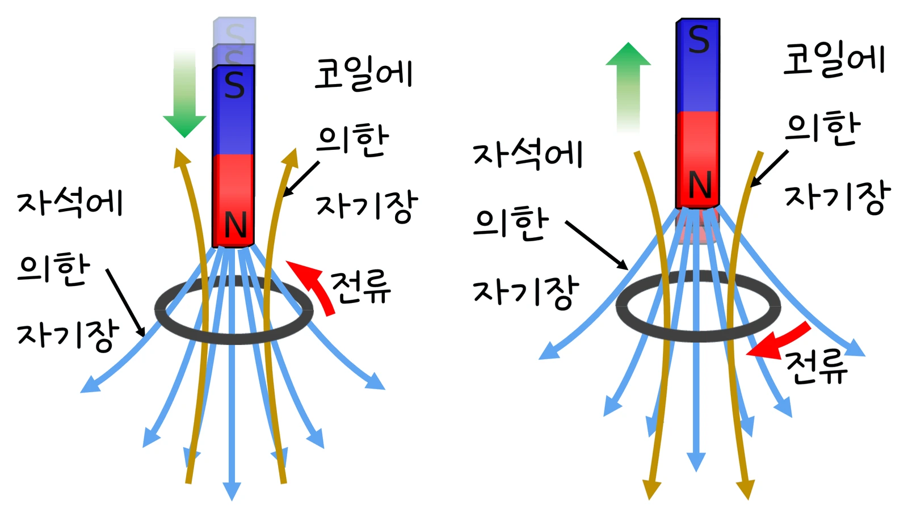

고3 전자기와 양자 · Ⅰ 전자기적 상호작용 · 웹툰 5~6화 「천천히 떨어지는 자석」·「세 가지 에너지 저장법」
실험에서 1차 코일(100~400회)·2차 코일(50~800회)의 감은 수, 1차 전압(110·220 V), 부하(10~200 Ω), 철심 상태(닫힌 고리·일부 열림·공심)를 바꾸며 2차 전압·전류·효율을 계산했습니다. V₂/V₁ = N₂/N₁이었고 승압하면 전류가 그만큼 줄었으며, 철심이 열리거나 없으면 결합이 약해 2차 전압과 효율이 크게 떨어졌습니다. 패러데이·렌츠 법칙과 변압기, 에너지 저장 소자를 정리합니다.
실험 데이터 되짚기
모형값: 효율 η와 결합 계수 k — 닫힌 철심 1.00·0.95, 일부 열림 0.95·0.85, 공심 0.85·낮음. 기준 N₁ = 100, V₁ = 220 V(웹툰 예 12 V), 부하 100 Ω.
| N₁ : N₂ | 철심 | V₂ | I₂ (100 Ω) | P₂ | I₁ | 효율 |
|---|---|---|---|---|---|---|
| 100 : 500 (승압) | 닫힌 고리 | 1 100 V | 11 A | 12.1 kW | 55 A | ≈ 100 % |
| 100 : 50 (강압) | 닫힌 고리 | 110 V | 1.1 A | 121 W | 0.55 A | ≈ 100 % |
| 100 : 800 | 닫힌 고리 | 1 760 V | 17.6 A | 31 kW | 141 A | ≈ 100 % |
| 100 : 500 | 일부 열림 | 약 940 V | 9.4 A | 8.8 kW | 42 A | 95 % |
| 100 : 500 | 공심 | 수백 V 이하 | 작음 | 작음 | — | 85 % 이하, 결합 약함 |
이상 변압기에서 V₁I₁ = V₂I₂ — 전압을 올리면 전류는 그만큼 줄어 송전 손실 I²R이 급감합니다(전압 10배 → 손실 1/100). 직류는 선속이 변하지 않아 변압되지 않습니다.
어떤 면을 지나는 자기력선의 양이 자기 선속 Φ = BA. 선속이 변하면 코일에 유도 기전력 V = −NΔΦ/Δt(패러데이 법칙)가 생기고, 유도 전류는 변화를 방해하는 방향으로 흐릅니다(렌츠 법칙). 예측 게임 — 알루미늄 관 속으로 네오디뮴 자석을 떨어뜨리면? 제로 ‘자석에 안 붙으니 똑같이’, 뭉치 ‘느리다’: 자석이 떨어지며 관 속 선속이 변하자 소용돌이 맴돌이 전류가 생겨 운동을 방해 — 관 밖 자석은 순식간에, 관 속은 한참 뒤에야. 맴돌이 전류는 운동 에너지를 열로 바꾸는 자기 브레이크(고속 열차·자유 낙하 탑, 판에 홈을 파면 약해짐). 변압기: 1차 코일의 교류가 철심 속 자기 선속을 계속 바꾸고 같은 철심을 감은 2차 코일에 전압이 유도(상호유도) — 두 코일이 같은 선속 변화를 겪으므로 V₂/V₁ = N₂/N₁, 에너지 보존으로 V₁I₁ = V₂I₂. 1 000 kW를 10 kV로 보내면 100 A, 100 kV면 10 A → 열손실 1/100: 발전소(2만 V) → 송전(345~765 kV) → 변전소 → 가정(220 V). 코일 자신의 전류 변화도 선속을 바꿔 기전력이 생기는 자체 유도(인덕터; 전류를 끊을 때 튀는 불꽃).
교재 그림
렌츠 법칙 — 유도 전류는 선속의 변화를 방해한다

왼쪽: N극이 다가오면 아래로 향하는 선속이 늘어나므로 고리는 위쪽 자기장(갈색)을 만들어 밀어냅니다. 오른쪽: N극이 멀어지면 줄어드는 선속을 채우려고 아래쪽 자기장을 만들어 끌어당깁니다 — 알루미늄 관 속 자석이 천천히 떨어지는 까닭.
움직여 보기
변압기 — 감은 수 비만큼 전압이 바뀐다
N₁ = 100 고정. 220 V·500회면 1 100 V로 5배 올라가고, 1차 전류는 55 A로 5배 커집니다(V₁I₁ = V₂I₂). 철심이 일부 열리면 선속이 새어 약 940 V, 효율 95 %(실험 모형값). 직류로 바꾸면 선속이 변하지 않아 2차 전압이 0 — 변압기는 교류에서만 일합니다. 그래프의 두 전압은 세로 눈금이 서로 다릅니다.
움직여 보기
송전 전압을 올리면 줄어드는 열손실
100 MW를 저항 10 Ω인 송전선으로 보낼 때(예제): 100 kV면 1 000 A·10 MW(10 %), 500 kV면 200 A·0.4 MW(0.4 %). 전압 5배 → 전류 1/5 → 손실은 1/25. 파란 점의 빠르기·개수가 전류 크기를 나타냅니다(실제 전자 속도는 아님).
저항: 전기 에너지를 열로 소비(전기난로, 백열전구). 축전기: 두 판 사이 전기장에 에너지를 저장했다가 한꺼번에(카메라 플래시, 제세동기, 전원 안정화). 인덕터: 코일 둘레 자기장에 에너지를 저장하고 전류가 줄면 되돌려 전류를 유지(전원 장치, 무선 충전, 잡음 필터). 예측 게임 — 저항+전구, 인덕터+전구 갈래 회로에 스위치를 켜면? 뭉치 ‘동시에’, 제로 ‘코일 쪽은 천천히’: 전류가 늘 때 인덕터는 에너지를 자기장에 채우느라 증가를 늦추고, 끌 때는 저장한 에너지를 내놓아 잠시 이어 갑니다. 축전기와 인덕터를 함께 쓰면 에너지가 전기장 ↔ 자기장을 오가며 저항에서 조금씩 열로(라디오 동조 회로). 충전기 기판: 축전기는 전압 안정, 코일은 잡음 차단, 저항은 전류 조절, 작은 칩은 반도체 회로(7화).
효율과 결합 계수는 철심 상태별로 고정한 모형값입니다. 실제 효율은 철심 손실(히스테리시스·와전류)·구리 손실·부하 조건에 따라 달라 무부하에서는 낮고 정격 부하 근처에서 95~99 %입니다. 1차 전류는 부하 전류 외에 철심을 자화하는 자화 전류(위상 90° 어긋남)가 더해져 단순 P₁ = P₂/η보다 크고, 코일 저항·누설 인덕턴스로 2차 전압도 부하에 따라 조금 떨어집니다. 휴대폰 충전기·무선 충전 패드·인덕션 레인지·전기차 충전기 모두 상호유도입니다.
N₁ 100 · N₂ 500 · 12 V → 60 V · 100 Ω → I₂ 0.6 A, I₁ 3.0 A · 전압 10배 → 손실 1/100 · 실제 효율 95~99 %
“5라운드! 알루미늄 관 속으로 네오디뮴 자석을 떨어뜨리면, 관 밖에서 떨어뜨릴 때보다 느리게 떨어질까? 난 ‘느리다’.” “알루미늄은 자석에 안 붙잖아. 똑같이 떨어지겠지.”
웹툰 5화 · 관 속 자석은 한참 뒤에야 천천히 — 맴돌이 전류, 제로 2 : 3 뭉치
“6라운드! 스위치를 켜는 순간, 두 전구가 동시에 켜질까? 난 동시에.” “인덕터는 전류가 갑자기 변하는 걸 막으니까, 코일 쪽 전구는 천천히 밝아질 것 같아.”
웹툰 6화 · 저항 쪽은 즉시, 코일 쪽은 서서히 — 제로 3 : 3 뭉치
N₂/N₁ = 5/220 = 1 : 44. P₂ = 10 W → P₁ = 11.1 W → I₁ = 11.1 ÷ 220 = 0.05 A. 전압을 44배 낮추니 전류는 약 40배 커집니다.
100 kV: I = 1 000 A → I²R = 10 MW(10 %). 500 kV: I = 200 A → 0.4 MW(0.4 %). 전압 5배 → 손실 1/25 — 초고압 송전의 이유.